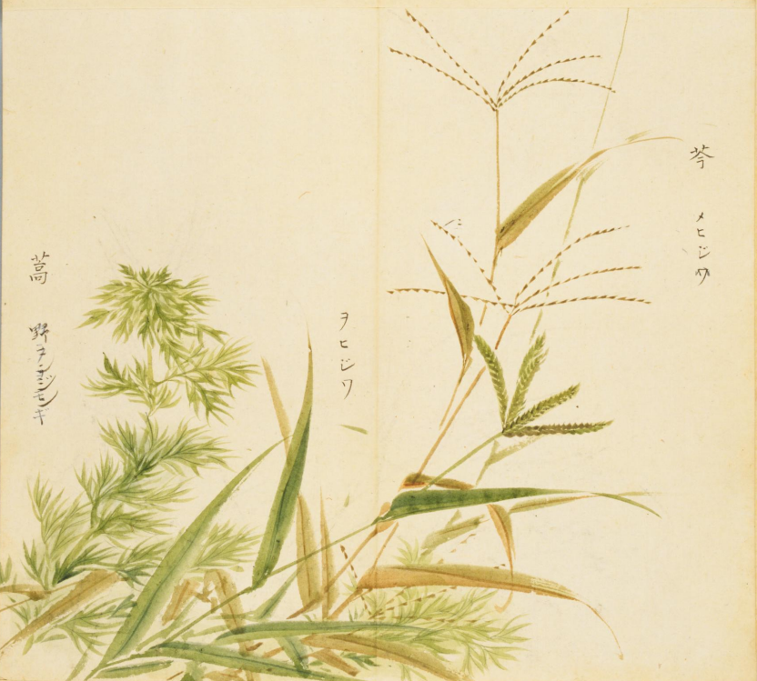
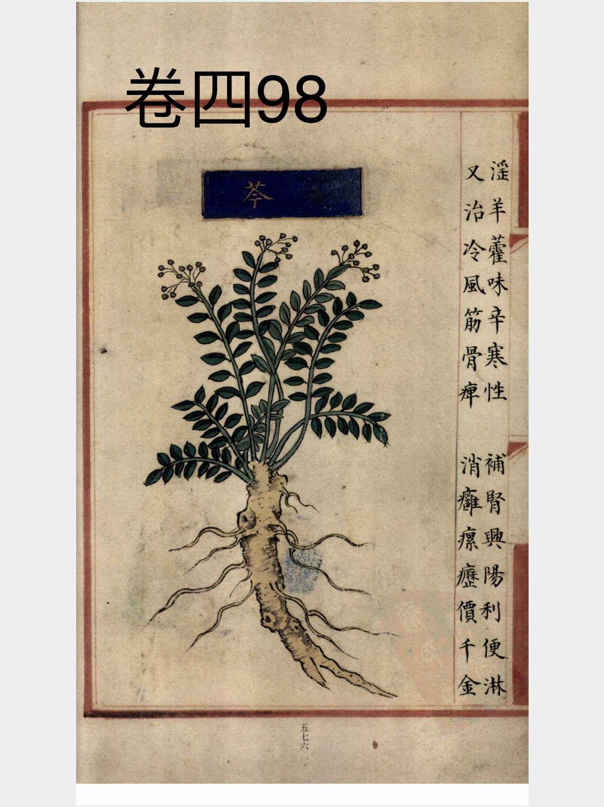
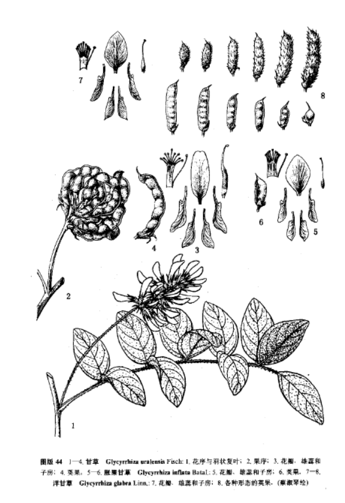

出现篇目
别名 腐肠（《本经》）、空肠（《别录》）、内虚（《别录》）、妒妇（《吴普》）、经芩（《别录》）、黄文（《别录》）、印头（《吴普》）、苦督邮（《记事》）
古代记载 《毛诗故训传》
芩，草也。（《毛传》注《鹿鸣》）
《毛诗草木鸟兽虫鱼疏》
芩草，茎如钗股，叶如竹，蔓生，泽中下地咸处为草，真实牛马皆喜食之。。
《毛诗正义》
正义曰：陆机云：“茎如钗股，叶如竹蔓，生泽中下地咸处，为草贞实，牛马亦喜食之。”（《毛诗正义》疏《鹿鸣》）
《诗集传》
芩、草名。莖如釵股、葉如竹蔓生。（《诗集传》集注《鹿鸣》）
《本草纲目》
《别录》曰︰黄芩，生秭归川谷及冤句。三月三日采根，阴干。 弘景曰︰秭归，属建平郡。今第一出彭城，郁州亦有之，惟深色坚实者好。俗方多用，道家不须。恭曰︰今出宜州、州、泾州者，佳。兖州大实亦好，名尾芩。 颂曰︰今川蜀、河东、陕西近郡，皆有之。苗长尺余，茎干粗如箸，叶从地四面作丛生，类紫草，高一尺许。亦有独茎者，叶细长，青色，两两相对。六月开紫花，根如知母粗细，长四、五寸，二月、八月采根，曝干。 《吴普本草》云︰二月生赤黄叶，两两四四相值。其茎空中，或方圆，高三、四尺。四月花紫红赤，五月实黑、根黄。二月至九月采，与今所说有小异也。
当代记载 《中国植物志》
甘草 （Glycyrrhiza uralensis），豆科，甘草属植物。多年生草本；根与根状茎粗状具甜味。茎直立。花冠紫色、白色或黄色。种子暗绿色，圆形或肾形。花期6-8月，果期7-10月。
产东北、华北、西北各省区及山东。常生于干旱沙地、河岸砂质地、山坡草地及盐渍化土壤中。蒙古及俄罗斯西伯利亚地区也有。

<细井徇>

<补遗雷公炮制便览>

<中国植物志>